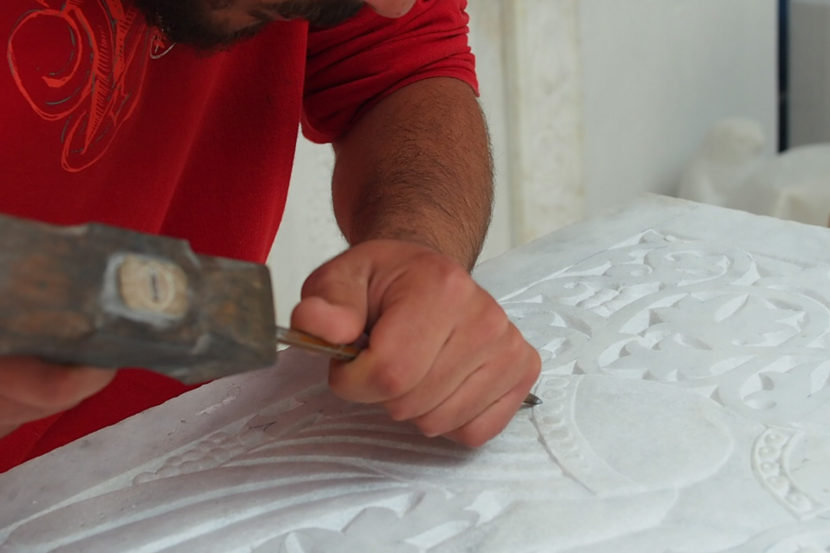

Τήνος
- H Τηνιακή Μαρμαροτεχνία είναι η τέχνη της εξόρυξης και της επεξεργασίας του μαρμάρου στην Τήνο.
- Η μετάδοση της τέχνης γίνεται με παρακολούθηση εργαστηρίων και φοίτηση σε σχολές στην Τήνο, στην Αθήνα και σε άλλα μέρη της Ελλάδας. Πολλοί από τους αποφοίτους απασχολούνται σε έργα αποκατάστασης αρχαίων και νεότερων μνημείων
- Η Τήνος, και ειδικότερα τα Έξω Μέρη, υπήρξε το σημαντικότερο Νεοελληνικό Κέντρο Μαρμαροτεχνίας στην Ελλάδα, η οποία έχει εγγραφεί στον Κατάλογο της Άυλης Πολιτιστικής Κληρονομιάς της UNESCO από το 2015.
- Η περιοχή με το άγονο έδαφος ήταν πλούσιο σε λευκό, γκρίζο και πράσινο μάρμαρο κι έτσι δημιουργήθηκαν πολλά λατομεία.
